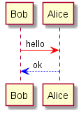

Sequence Diagram
Basic examples
The sequence "->" is used to draw a message between two
participants.
Participants do not have to be explicitly declared.
To have a dotted arrow, you use -->
It is also possible to use <- and <--.
That does not change the drawing, but may improve readability.
@startuml
Alice -> Bob: Authentication Request
Bob --> Alice: Authentication Response
Alice -> Bob: Another authentication Request
Alice <-- Bob: another authentication Response
@enduml
|
|
Everything that starts with simple quote ' is a
comment.
You can also put comments on several lines using /' to start and '/ to end.
Declaring participant
It is possible to change participant order using the participant
keyword.
It is also possible to use other keywords to declare a participant:
actorboundarycontrolentitydatabase
@startuml
actor Foo1
boundary Foo2
control Foo3
entity Foo4
database Foo5
Foo1 -> Foo2 : To boundary
Foo1 -> Foo3 : To control
Foo1 -> Foo4 : To entity
Foo1 -> Foo5 : To database
@enduml
|
|
You can rename a participant using the as keyword.
You can also change the background color of
actor or participant.
@startuml
actor Bob #red
' The only difference between actor
'and participant is the drawing
participant Alice
participant "I have a really\nlong name" as L #99FF99
/' You can also declare:
participant L as "I have a really\nlong name" #99FF99
'/
Alice->Bob: Authentication Request
Bob->Alice: Authentication Response
Bob->L: Log transaction
@enduml
|
|
Use non-letters in participants
You can use quotes to define participants.
And you can use the as keyword to give an alias to those participants.
@startuml
Alice -> "Bob()" : Hello
"Bob()" -> "This is very\nlong" as Long
' You can also declare:
' "Bob()" -> Long as "This is very\nlong"
Long --> "Bob()" : ok
@enduml
|
|
Message to Self
A participant can send a message to itself.
It is also possible to have multi-line using \n.
@startuml
Alice->Alice: This is a signal to self.\nIt also demonstrates\nmultiline \ntext
@enduml
|
|
Change arrow style
You can change arrow style by several ways:
- add a final
x to denote a lost message
- use
\ or / instead of < or > to
have only the bottom or top part of the arrow
- repeat the arrow head (for example,
>> or //) head to have a thin drawing
- use
-- instead of - to have a dotted arrow
- add a final "o" at arrow head
- use bidirectional arrow
@startuml
Bob ->x Alice
Bob -> Alice
Bob ->> Alice
Bob -\ Alice
Bob \\- Alice
Bob //-- Alice
Bob ->o Alice
Bob o\\-- Alice
Bob <-> Alice
Bob <->o Alice
@enduml
|
|
Change arrow color
You can change the color of individual arrows using the following notation:
@startuml
Bob -[#red]> Alice : hello
Alice -[#0000FF]->Bob : ok
@enduml
|
 |
Message sequence numbering
The keyword autonumber is used to
automatically add number to messages.
@startuml
autonumber
Bob -> Alice : Authentication Request
Bob <- Alice : Authentication Response
@enduml
|
|
You can specify a startnumber with autonumber 'start' , and
also an increment with autonumber 'start' 'increment'.
@startuml
autonumber
Bob -> Alice : Authentication Request
Bob <- Alice : Authentication Response
autonumber 15
Bob -> Alice : Another authentication Request
Bob <- Alice : Another authentication Response
autonumber 40 10
Bob -> Alice : Yet another authentication Request
Bob <- Alice : Yet another authentication Response
@enduml
|
|
You can specify a format for your number by using between double-quote.
The formatting is done with the Java class DecimalFormat
('0' means digit, '#' means digit and zero if absent).
You can use some html tag in the format.
@startuml
autonumber "<b>[000]"
Bob -> Alice : Authentication Request
Bob <- Alice : Authentication Response
autonumber 15 "<b>(<u>##</u>)"
Bob -> Alice : Another authentication Request
Bob <- Alice : Another authentication Response
autonumber 40 10 "<font color=red><b>Message 0 "
Bob -> Alice : Yet another authentication Request
Bob <- Alice : Yet another authentication Response
@enduml
|
|
Title
The title keywords is used to put a title.
@startuml
title Simple communication example
Alice -> Bob: Authentication Request
Bob --> Alice: Authentication Response
@enduml
|
|
Legend the diagram
The legend and end legend are keywords is used to put a legend.
You can optionally specify to have left, right or center
alignment for the legend.
@startuml
Alice -> Bob : Hello
legend right
Short
legend
endlegend
@enduml
|
|
Splitting diagrams
The newpage keyword is used to split a diagram into several images.
You can put a title for the new page just after the newpage
keyword.
This is very handy with Word to print long diagram on
several pages.
@startuml
Alice -> Bob : message 1
Alice -> Bob : message 2
newpage
Alice -> Bob : message 3
Alice -> Bob : message 4
newpage A title for the\nlast page
Alice -> Bob : message 5
Alice -> Bob : message 6
@enduml
|
|
|
 |
Grouping message
It is possible to group messages together using the following
keywords:
alt/elseoptloopparbreakcriticalgroup, followed by a text to be displayed
It is possible a add a text that will be displayed into the
header (except for group).
The end keyword is used to close the group.
Note that it is possible to nest groups.
@startuml
Alice -> Bob: Authentication Request
alt successful case
Bob -> Alice: Authentication Accepted
else some kind of failure
Bob -> Alice: Authentication Failure
group My own label
Alice -> Log : Log attack start
loop 1000 times
Alice -> Bob: DNS Attack
end
Alice -> Log : Log attack end
end
else Another type of failure
Bob -> Alice: Please repeat
end
@enduml
|
 |
Notes on messages
It is possible to put notes on message using the note left
or note right keywords just after the message.
You can have a multi-line note using the end note
keywords.
@startuml
Alice->Bob : hello
note left: this is a first note
Bob->Alice : ok
note right: this is another note
Bob->Bob : I am thinking
note left
a note
can also be defined
on several lines
end note
@enduml
|
|
Some other notes
It is also possible to place notes relative to participant with note
left of , note right of or note over keywords.
It is possible to highlight a note by changing its background
color.
You can also have a multi-line note using the end note
keywords.
@startuml
participant Alice
participant Bob
note left of Alice #aqua
This is displayed
left of Alice.
end note
note right of Alice: This is displayed right of Alice.
note over Alice: This is displayed over Alice.
note over Alice, Bob #FFAAAA: This is displayed\n over Bob and Alice.
note over Bob, Alice
This is yet another
example of
a long note.
end note
@enduml
|
|
Changing notes shape
You can use hnote and rnote keywords
to change note shapes.
@startuml
caller -> server : conReq
hnote over caller : idle
caller <- server : conConf
rnote over server
"r" as rectangle
"h" as hexagon
endrnote
@enduml
|
|
It is also possible to use creole formatting:
@startuml
participant Alice
participant "The **Famous** Bob" as Bob
Alice -> Bob : hello --there--
... Some ~~long delay~~ ...
Bob -> Alice : ok
note left
This is **bold**
This is //italics//
This is ""monospaced""
This is --stroked--
This is __underlined__
This is ~~waved~~
end note
Alice -> Bob : A //well formatted// message
note right of Alice
This is <back:cadetblue><size:18>displayed</size></back>
__left of__ Alice.
end note
note left of Bob
<u:red>This</u> is <color #118888>displayed</color>
**<color purple>left of</color> <s:red>Alice</strike> Bob**.
end note
note over Alice, Bob
<w:#FF33FF>This is hosted</w> by <img sourceforge.jpg>
end note
@enduml
|
|
Divider
If you want, you can split a diagram using == separator to
divide your diagram into logical steps.
@startuml
== Initialization ==
Alice -> Bob: Authentication Request
Bob --> Alice: Authentication Response
== Repetition ==
Alice -> Bob: Another authentication Request
Alice <-- Bob: another authentication Response
@enduml
|
|
Reference
You can use reference in a diagram, using the keyword ref over.
@startuml
participant Alice
actor Bob
ref over Alice, Bob : init
Alice -> Bob : hello
ref over Bob
This can be on
several lines
end ref
@enduml
|
|
Delay
You can use ... to indicate a delay in the diagram.
And it is also possible to put a message with this delay.
@startuml
Alice -> Bob: Authentication Request
...
Bob --> Alice: Authentication Response
...5 minutes latter...
Bob --> Alice: Bye !
@enduml
|
|
Space
You can use ||| to indicate some spacing in the diagram.
It is also possible to specify a number of pixel to be used.
@startuml
Alice -> Bob: message 1
Bob --> Alice: ok
|||
Alice -> Bob: message 2
Bob --> Alice: ok
||45||
Alice -> Bob: message 3
Bob --> Alice: ok
@enduml
|
|
Lifeline Activation and Destruction
The activate and deactivate are used to denote
participant activation.
Once a participant is activated, its lifeline appears.
The activate and deactivate apply on
the previous message.
The destroy denote the end of the lifeline of a
participant.
@startuml
participant User
User -> A: DoWork
activate A
A -> B: << createRequest >>
activate B
B -> C: DoWork
activate C
C --> B: WorkDone
destroy C
B --> A: RequestCreated
deactivate B
A -> User: Done
deactivate A
@enduml
|
|
Nested lifeline can be used, and it is possible to add a
color on the
lifeline.
@startuml
participant User
User -> A: DoWork
activate A #FFBBBB
A -> A: Internal call
activate A #DarkSalmon
A -> B: << createRequest >>
activate B
B --> A: RequestCreated
deactivate B
deactivate A
A -> User: Done
deactivate A
@enduml
|
|
Participant creation
You can use the create keyword just before the first
reception of a message to emphasize the fact that this message is
actually creating this new object.
@startuml
Bob -> Alice : hello
create Other
Alice -> Other : new
create control String
Alice -> String
note right : You can also put notes!
Alice --> Bob : ok
@enduml
|
|
Incoming and outgoing messages
You can use incoming or outgoing arrows if you want to focus on a part
of the diagram.
Use square brackets to denote the left "[" or the
right "]" side of the diagram.
@startuml
[-> A: DoWork
activate A
A -> A: Internal call
activate A
A ->] : << createRequest >>
A<--] : RequestCreated
deactivate A
[<- A: Done
deactivate A
@enduml
|
 |
You can also have the following syntax:
@startuml
[-> Bob
[o-> Bob
[o->o Bob
[x-> Bob
[<- Bob
[x<- Bob
Bob ->]
Bob ->o]
Bob o->o]
Bob ->x]
Bob <-]
Bob x<-]
@enduml
|
|
Stereotypes and Spots
It is possible to add stereotypes to participants using <<
and >>.
In the stereotype, you can add a spotted character
in a colored circle using the syntax (X,color).
@startuml
participant "Famous Bob" as Bob << Generated >>
participant Alice << (C,#ADD1B2) Testable >>
Bob->Alice: First message
@enduml
|
|
@startuml
participant Bob << (C,#ADD1B2) >>
participant Alice << (C,#ADD1B2) >>
Bob->Alice: First message
@enduml
|
|
More information on titles
You can use creole formatting in the title.
@startuml
title __Simple__ **communication** example
Alice -> Bob: Authentication Request
Bob -> Alice: Authentication Response
@enduml
|
|
You can add newline using \n in the title description.
@startuml
title __Simple__ communication example\non several lines
Alice -> Bob: Authentication Request
Bob -> Alice: Authentication Response
@enduml
|
|
You can also define title on several lines using title
and end title keywords.
@startuml
title
<u>Simple</u> communication example
on <i>several</i> lines and using <font color=red>html</font>
This is hosted by <img:sourceforge.jpg>
end title
Alice -> Bob: Authentication Request
Bob -> Alice: Authentication Response
@enduml
|
|
Participants encompass
It is possible to draw a box around some participants, using box
and end box commands.
You can add an optional title or a
optional background color, after the box keyword.
@startuml
box "Internal Service" #LightBlue
participant Bob
participant Alice
end box
participant Other
Bob -> Alice : hello
Alice -> Other : hello
@enduml
|
|
You can use the hide footbox keywords to remove the footer
of the diagram.
@startuml
hide footbox
title Footer removed
Alice -> Bob: Authentication Request
Bob --> Alice: Authentication Response
@enduml
|
|
Skinparam
You can use the skinparam
command to change colors and fonts for the drawing.
You can use this command:
@startuml
skinparam backgroundColor #EEEBDC
skinparam sequence {
ArrowColor DeepSkyBlue
ActorBorderColor DeepSkyBlue
LifeLineBorderColor blue
LifeLineBackgroundColor #A9DCDF
ParticipantBorderColor DeepSkyBlue
ParticipantBackgroundColor DodgerBlue
ParticipantFontName Impact
ParticipantFontSize 17
ParticipantFontColor #A9DCDF
ActorBackgroundColor aqua
ActorFontColor DeepSkyBlue
ActorFontSize 17
ActorFontName Aapex
}
actor User
participant "First Class" as A
participant "Second Class" as B
participant "Last Class" as C
User -> A: DoWork
activate A
A -> B: Create Request
activate B
B -> C: DoWork
activate C
C --> B: WorkDone
destroy C
B --> A: Request Created
deactivate B
A --> User: Done
deactivate A
@enduml
|
|